Oversized wall art shouldn’t cost a small fortune or look like a generic store-bought canvas. Commission Stevan to develop a custom graphic or visual composition for your space—printed at monumental scale on fabric, hand-built on a heavy cross-braced wood stretcher frame, and hand-stretched in the shop.
Original halftone fabric print hand-stretched over a deep wood gallery frame—available now in Memphis (also featured with Stevan’s video edit on @tallslimcollinsdesign ↗).
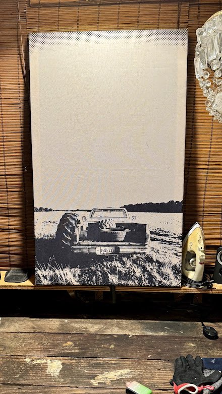
High-contrast halftone pickup truck and tractor tire composition with dot-matrix sky fade.
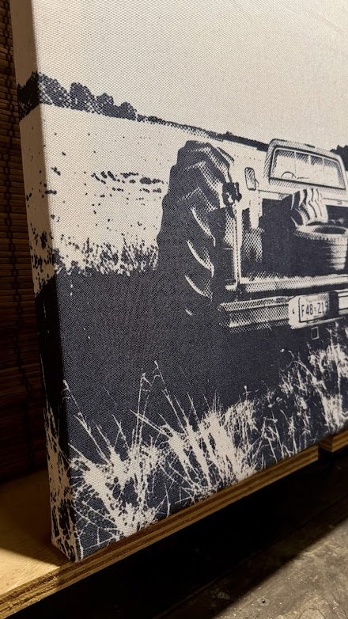
Clean gallery-wrapped fabric edges stretched taut over solid wood bars.
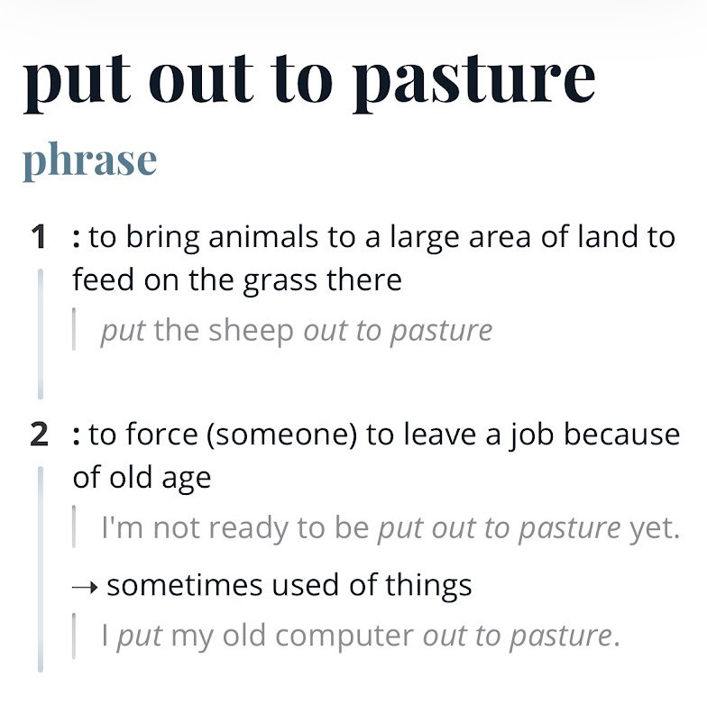
Inquire directly to claim this piece or ask about other finished stock in the studio.
How large-scale stretched fabric pieces command a real room alongside Stevan’s previous graphic works.
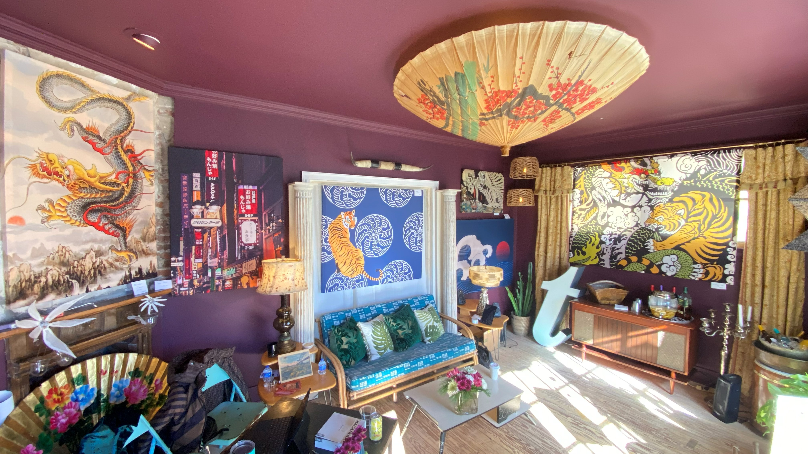
Featuring the Tiger on Japanese Wave Medallions over the Ficks Reed sofa alongside Stevan’s Dragon, Tokyo Neon, and Great Wave stretched fabric works.
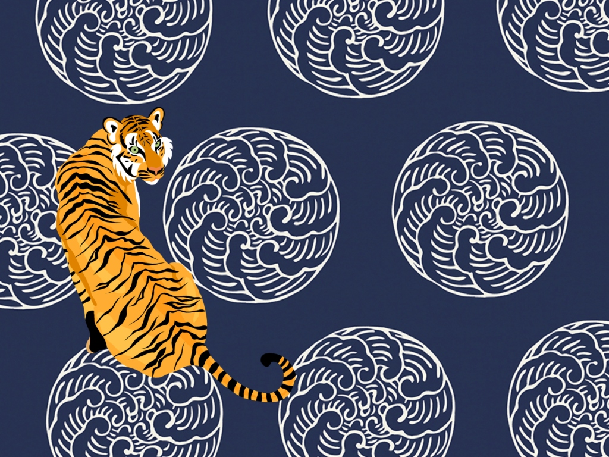
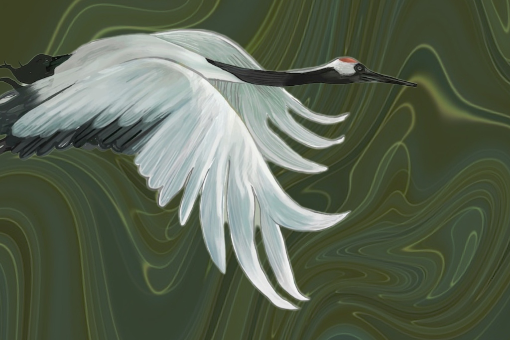
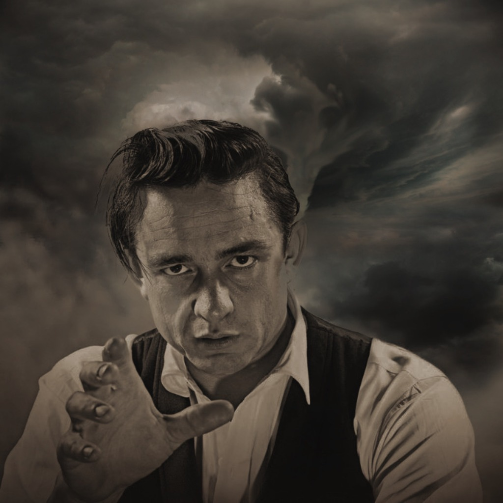
Every frame is cut, clamped square, cross-braced, and hand-stretched by Stevan in the workshop. *(Client works shown below are private one-of-one commissions built and stretched for client spaces.)*
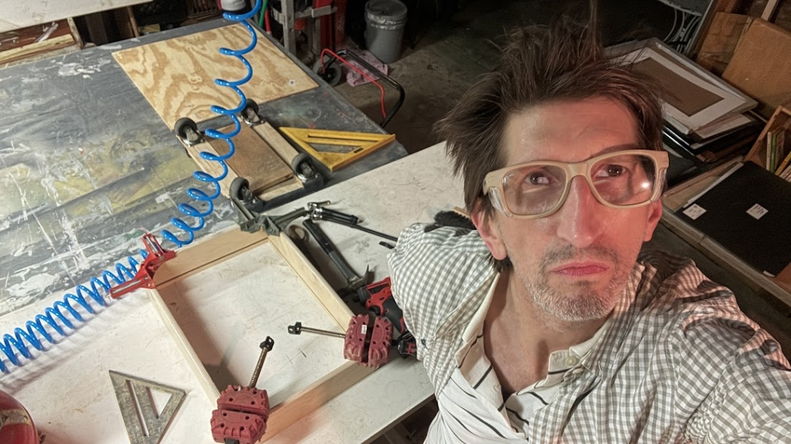
Corner clamps, speed squares, and pneumatic fastening on the Spottswood worktable.
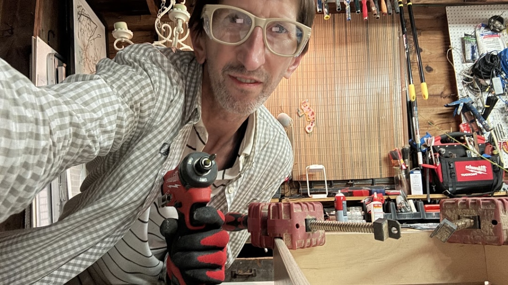
Built to the exact dimensions your wall calls for.
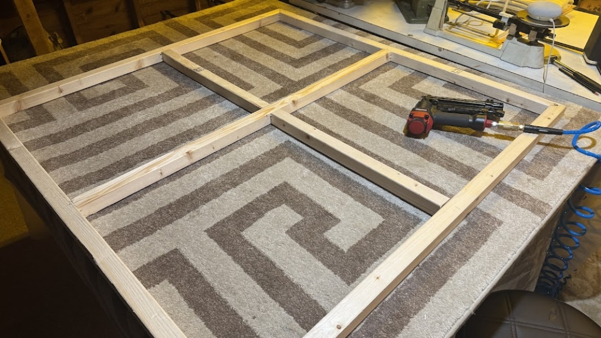
Heavy center cross-bracing keeps monumental spans rigid and flat.
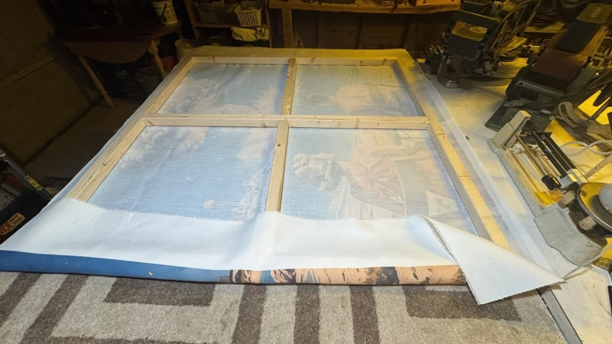
Large-format printed textile wrapped and stapled around the rear perimeter.
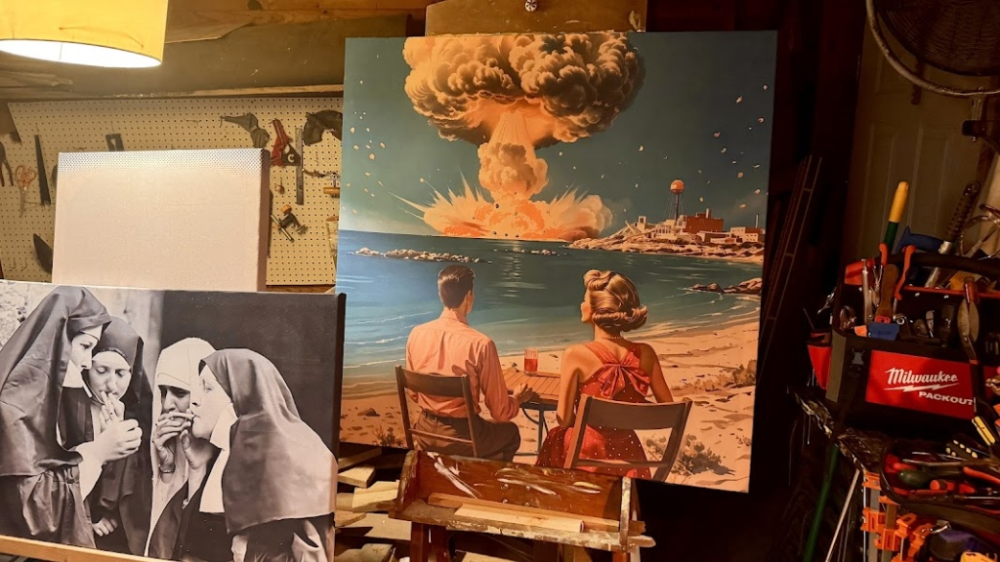
Private one-of-one client commissions ready for local delivery and hanging.